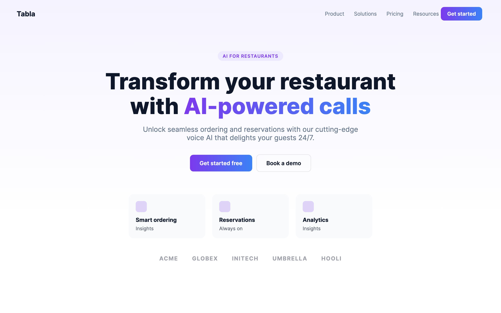
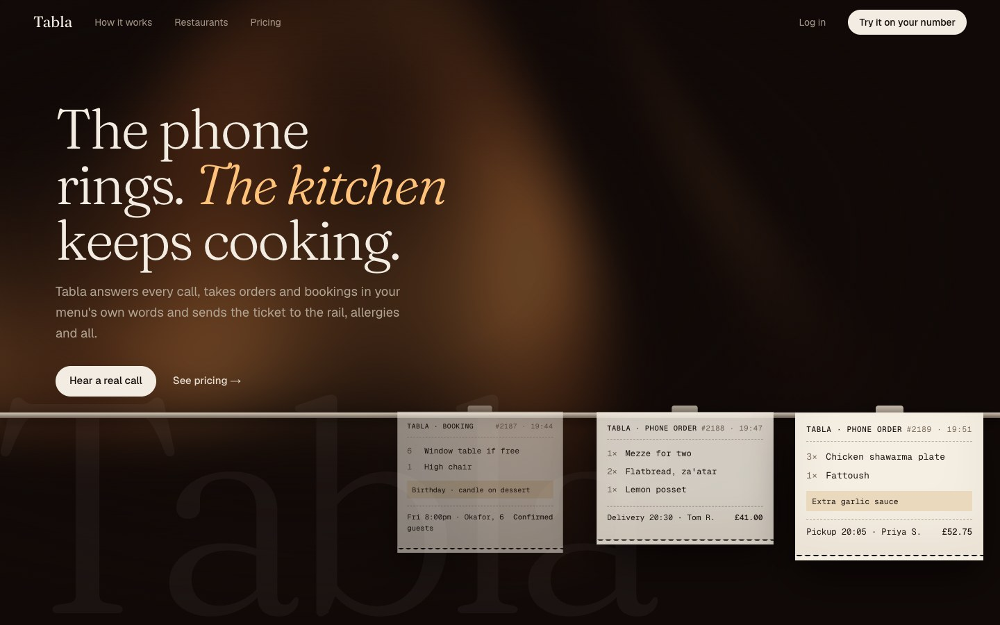
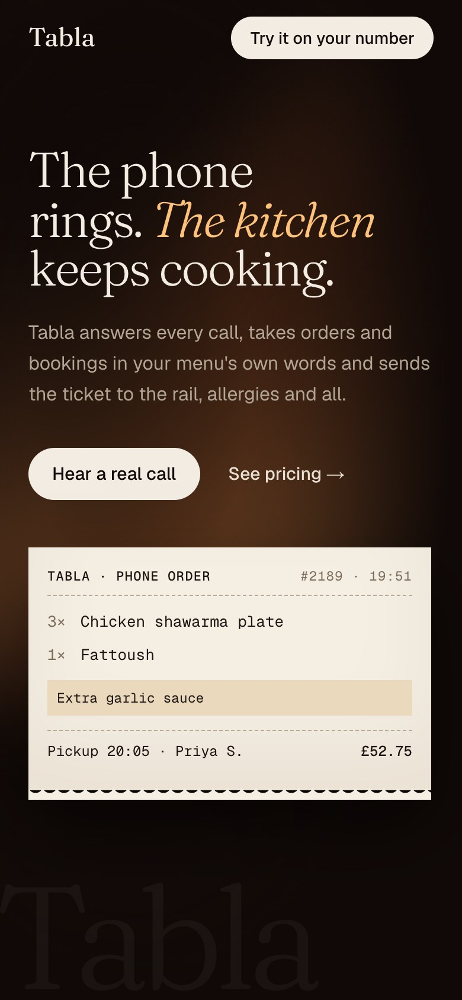

Hero revamp: before and after
Desktop · 1440×900
Drag the handle to compare the first screens. Green is better, red is worse; changes within run-to-run noise are marked.


BeforeAfter| Metric | Before | After | Change |
|---|---|---|---|
| Speed | |||
| LCP | 208 ms | 1068 ms | ▲ +860 ms (+413%) |
| TTFB | 2 ms | 5 ms | within noise |
| Resource load delay | 0 ms | 0 ms | |
| Resource load time | 0 ms | 0 ms | |
| Element render delay | 206 ms | 1063 ms | ▲ +857 ms (+416%) |
| CLS | 0 | 0.022 | ▲ +0.02 |
| First contentful paint | 208 ms | 1068 ms | ▲ +860 ms (+413%) |
| Total blocking time | 0 ms | 798 ms | ▲ +798 ms |
| Actions fully visible after | 270 ms | 681 ms | ▲ +411 ms (+152%) |
| Render-blocking files | 0 | 3 | ▲ +3 |
| Web fonts | 0 KB | 147 KB | ▲ +147 |
| Font files before first paint | 0 | 5 | ▲ +5 |
| First-load weight | 0 MB | 0.84 MB | ▲ +0.84 |
| Motion | |||
| Frame time p95 (2 s after load) | 16.8 ms | 83.3 ms | ▲ +66.5 ms (+396%) |
| Long frames (> 50 ms) | 0 | 7 | ▲ +7 |
| Motion left on under reduced motion | 0 | 0 | |
| Message | |||
| Headline words | 6 | 7 | ▲ +1 (+17%) |
| Headline lines | 2 | 3 | ▲ +1 (+50%) |
| Headline size | 64px | 80px | ▲ +16 (+25%) |
| Headline contrast (2nd-percentile pixel) | 3.31:1 | 9.88:1 | ▲ +6.57 (+198%) |
| Subhead words | 15 | 23 | ▲ +8 (+53%) |
| Action | |||
| CTAs in first screen | 2 | 1 | ▼ -1 (-50%) |
| Primary CTA visible without scrolling | yes | yes | |
| Smallest CTA height | 48px | 44px | ▼ -4 (-8%) |
| Lowest CTA label contrast | 1:1 | 16.83:1 | ▲ +15.83 (+1583%) |
| Layout | |||
| Horizontal overflow | 0px | 0px | |
| Visual share of first screen | 0% | 100% | ▲ +100 pts |
| Empty share of first screen | 88% | 0% | ▼ -88 pts |
| Template tells (heuristic) | 5 | 0 | ▼ -5 (-100%) |
| Access | |||
| Controls without a name | 0 | 0 | |
| Focus visible on primary CTA | yes | yes | |
| Hero in a landmark | no | yes | ▲ now yes |
Phone · 390×844
Drag the handle to compare the first screens. Green is better, red is worse; changes within run-to-run noise are marked.

BeforeAfter| Metric | Before | After | Change |
|---|---|---|---|
| Speed | |||
| LCP | 204 ms | 1048 ms | ▲ +844 ms (+414%) |
| TTFB | 1 ms | 2 ms | within noise |
| Resource load delay | 0 ms | 0 ms | |
| Resource load time | 0 ms | 0 ms | |
| Element render delay | 203 ms | 1046 ms | ▲ +843 ms (+415%) |
| CLS | 0 | 0.01 | within noise |
| First contentful paint | 204 ms | 1048 ms | ▲ +844 ms (+414%) |
| Total blocking time | 0 ms | 199 ms | ▲ +199 ms |
| Actions fully visible after | 266 ms | 680 ms | ▲ +414 ms (+156%) |
| Render-blocking files | 0 | 3 | ▲ +3 |
| Web fonts | 0 KB | 147 KB | ▲ +147 |
| Font files before first paint | 0 | 5 | ▲ +5 |
| First-load weight | 0 MB | 0.84 MB | ▲ +0.84 |
| Motion | |||
| Frame time p95 (2 s after load) | 16.8 ms | 50 ms | ▲ +33.2 ms (+198%) |
| Long frames (> 50 ms) | 0 | 1 | ▲ +1 |
| Motion left on under reduced motion | 0 | 0 | |
| Message | |||
| Headline words | 6 | 7 | ▲ +1 (+17%) |
| Headline lines | 5 | 3 | ▼ -2 (-40%) |
| Headline size | 64px | 41.6px | ▼ -22.4 (-35%) |
| Headline contrast (2nd-percentile pixel) | 3.28:1 | 12.63:1 | ▲ +9.35 (+285%) |
| Subhead words | 15 | 23 | ▲ +8 (+53%) |
| Action | |||
| CTAs in first screen | 2 | 1 | ▼ -1 (-50%) |
| Primary CTA visible without scrolling | yes | yes | |
| Smallest CTA height | 48px | 44px | ▼ -4 (-8%) |
| Lowest CTA label contrast | 1:1 | 16.83:1 | ▲ +15.83 (+1583%) |
| Layout | |||
| Horizontal overflow | 155px | 0px | ▼ -155 (-100%) |
| Visual share of first screen | 0% | 100% | ▲ +100 pts |
| Empty share of first screen | 66% | 0% | ▼ -66 pts |
| Template tells (heuristic) | 5 | 0 | ▼ -5 (-100%) |
| Access | |||
| Controls without a name | 0 | 0 | |
| Focus visible on primary CTA | yes | yes | |
| Hero in a landmark | no | yes | ▲ now yes |
LCP breakdown
Where the time to the largest paint goes (web.dev subparts). Bars share one scale per viewport.
Desktop · 1440×900
TTFB 2 ms · Load delay 0 ms · Load time 0 ms · Render delay 206 ms · biggest: element render delay
TTFB 5 ms · Load delay 0 ms · Load time 0 ms · Render delay 1063 ms · biggest: element render delay
Phone · 390×844
TTFB 1 ms · Load delay 0 ms · Load time 0 ms · Render delay 203 ms · biggest: element render delay
TTFB 2 ms · Load delay 0 ms · Load time 0 ms · Render delay 1046 ms · biggest: element render delay
Template tells
Heuristics from the DOM, computed styles and the screenshot's colours: judgment calls, reported as warnings, never failures.
- removedGradient text on one wordgradient text on 2 of 6 headline words ("AI-powered calls") · was on desktop, phone
- removedEyebrow pill above the h1eyebrow pill above the headline ("AI for restaurants") · was on desktop, phone
- removedCentred headline + two equal buttonscentred headline over two equal buttons ("Get started free" 179px, "Book a demo" 158px) · was on desktop, phone
- removedGrey logo stripgrey logo strip of 5 muted items (div.logos), placeholder names: ACME, GLOBEX, INITECH, UMBRELLA · was on desktop, phone
- removedEmpty or small visual slot (< 15%)no visual in the first screen: the hero is text on a background · was on desktop, phone
Findings
FAIL and WARN lines matched across the two audits.
Fixed 16
- FAILphone the page scrolls sideways: content is 155px wider than the 390px screen (nav > div (+67px), div.cards (+155px), div.logos (+67px))
- WARNdesktop CTA "Get started free" label contrast 1:1
- WARNdesktop the hero isn't inside <main> or <header>: screen-reader landmark navigation skips it
- WARNdesktop template tell (heuristic): gradient text on 2 of 6 headline words ("AI-powered calls")
- WARNdesktop template tell (heuristic): eyebrow pill above the headline ("AI for restaurants")
- WARNdesktop template tell (heuristic): centred headline over two equal buttons ("Get started free" 179px, "Book a demo" 158px)
- WARNdesktop template tell (heuristic): grey logo strip of 5 muted items (div.logos), placeholder names: ACME, GLOBEX, INITECH, UMBRELLA
- WARNdesktop template tell (heuristic): no visual in the first screen: the hero is text on a background
- WARNphone headline wraps to 6 lines: shorten it or reduce the size at this width
- WARNphone CTA "Get started free" label contrast 1:1
- WARNphone the hero isn't inside <main> or <header>: screen-reader landmark navigation skips it
- WARNphone template tell (heuristic): gradient text on 2 of 6 headline words ("AI-powered calls")
- WARNphone template tell (heuristic): eyebrow pill above the headline ("AI for restaurants")
- WARNphone template tell (heuristic): centred headline over two equal buttons ("Get started free" 179px, "Book a demo" 158px)
- WARNphone template tell (heuristic): grey logo strip of 5 muted items (div.logos), placeholder names: ACME, GLOBEX, INITECH, UMBRELLA
- WARNphone template tell (heuristic): no visual in the first screen: the hero is text on a background
New in the after audit 7
- FAILdesktop total blocking time 798 ms (median of 3)
- WARNdesktop render-blocking: 3pdwmxwmcwh7a.css, 1pz8xehpf75dt.css, 1vbt_3wq8ho_h.css
- WARNdesktop 5 font files are requested before first paint: preload only the one or two the hero needs; subset the rest
- WARNdesktop frame timing over 2 s after load: p95 83.3 ms, 7 long frame(s) over 50 ms, 23 over 34 ms, 9 animation(s) running: the intro animation drops frames. Animate transform/opacity only, move work off the main thread
- WARNphone render-blocking: 3pdwmxwmcwh7a.css, 1pz8xehpf75dt.css, 1vbt_3wq8ho_h.css
- WARNphone 5 font files are requested before first paint: preload only the one or two the hero needs; subset the rest
- WARNphone frame timing over 2 s after load: p95 50 ms, 1 long frame(s) over 50 ms, 8 over 34 ms, 9 animation(s) running: the intro animation drops frames. Animate transform/opacity only, move work off the main thread
Still open 0
None.
For the PR
The same summary as Markdown.
## Hero revamp: before → after | | Before | After | |---|---|---| | Failures | 1 | 1 | | Warnings | 15 | 6 | | Passes | 27 | 29 | **Template tells** (heuristics): Gradient text on one word ✓ removed · Eyebrow pill above the h1 ✓ removed · Centred headline + two equal buttons ✓ removed · Grey logo strip ✓ removed · Empty or small visual slot (< 15%) ✓ removed | desktop | Before | After | | |---|---|---|---| | LCP | 208 ms | 1068 ms | ✕ worse | | ↳ TTFB | 2 ms | 5 ms | within noise | | ↳ Element render delay | 206 ms | 1063 ms | ✕ worse | | CLS | 0 | 0.022 | ✕ worse | | First contentful paint | 208 ms | 1068 ms | ✕ worse | | Total blocking time | 0 ms | 798 ms | ✕ worse | | Actions fully visible after | 270 ms | 681 ms | ✕ worse | | Render-blocking files | 0 | 3 | ✕ worse | | Web fonts | 0 KB | 147 KB | ✕ worse | | Font files before first paint | 0 | 5 | ✕ worse | | First-load weight | 0 MB | 0.84 MB | ✕ worse | | Frame time p95 (2 s after load) | 16.8 ms | 83.3 ms | ✕ worse | | Long frames (> 50 ms) | 0 | 7 | ✕ worse | | Headline words | 6 | 7 | | | Headline lines | 2 | 3 | ✕ worse | | Headline size | 64px | 80px | | | Headline contrast (2nd-percentile pixel) | 3.31:1 | 9.88:1 | ✓ better | | Subhead words | 15 | 23 | | | CTAs in first screen | 2 | 1 | | | Smallest CTA height | 48px | 44px | ✕ worse | | Lowest CTA label contrast | 1:1 | 16.83:1 | ✓ better | | Visual share of first screen | 0% | 100% | ✓ better | | Empty share of first screen | 88% | 0% | | | Template tells (heuristic) | 5 | 0 | ✓ better | | Hero in a landmark | no | yes | ✓ better | | phone | Before | After | | |---|---|---|---| | LCP | 204 ms | 1048 ms | ✕ worse | | ↳ TTFB | 1 ms | 2 ms | within noise | | ↳ Element render delay | 203 ms | 1046 ms | ✕ worse | | CLS | 0 | 0.01 | within noise | | First contentful paint | 204 ms | 1048 ms | ✕ worse | | Total blocking time | 0 ms | 199 ms | ✕ worse | | Actions fully visible after | 266 ms | 680 ms | ✕ worse | | Render-blocking files | 0 | 3 | ✕ worse | | Web fonts | 0 KB | 147 KB | ✕ worse | | Font files before first paint | 0 | 5 | ✕ worse | | First-load weight | 0 MB | 0.84 MB | ✕ worse | | Frame time p95 (2 s after load) | 16.8 ms | 50 ms | ✕ worse | | Long frames (> 50 ms) | 0 | 1 | ✕ worse | | Headline words | 6 | 7 | | | Headline lines | 5 | 3 | ✓ better | | Headline size | 64px | 41.6px | | | Headline contrast (2nd-percentile pixel) | 3.28:1 | 12.63:1 | ✓ better | | Subhead words | 15 | 23 | | | CTAs in first screen | 2 | 1 | | | Smallest CTA height | 48px | 44px | ✕ worse | | Lowest CTA label contrast | 1:1 | 16.83:1 | ✓ better | | Horizontal overflow | 155px | 0px | ✓ better | | Visual share of first screen | 0% | 100% | ✓ better | | Empty share of first screen | 66% | 0% | | | Template tells (heuristic) | 5 | 0 | ✓ better | | Hero in a landmark | no | yes | ✓ better | Measured with hero-audit.mjs (Slow 4G + 4× CPU), median of 3 loads. Template tells and density are heuristics.